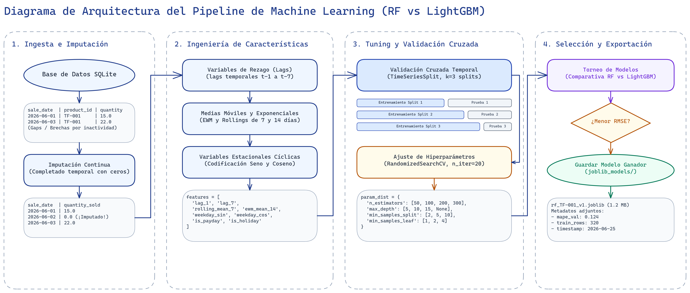
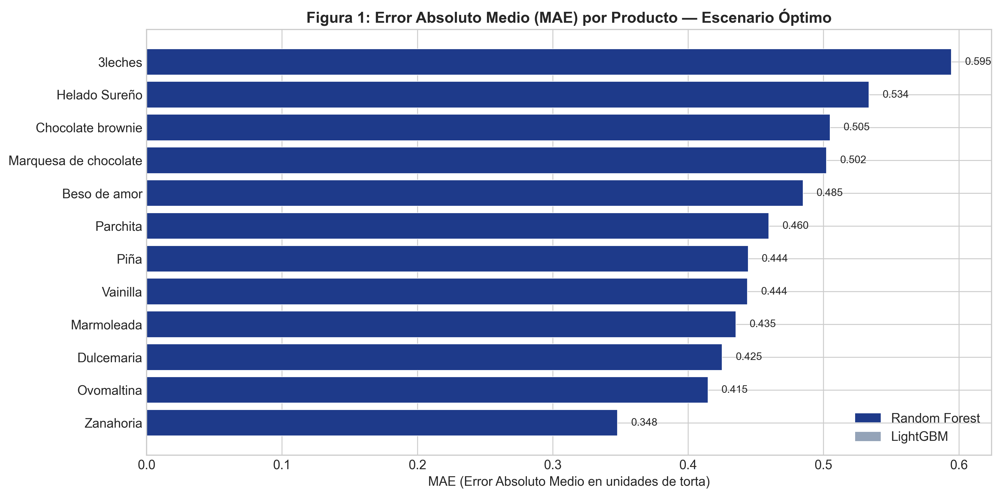
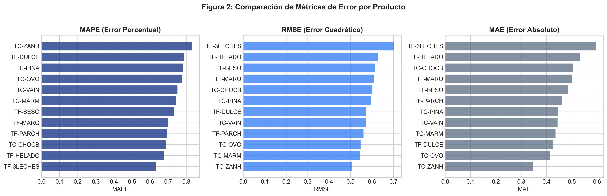
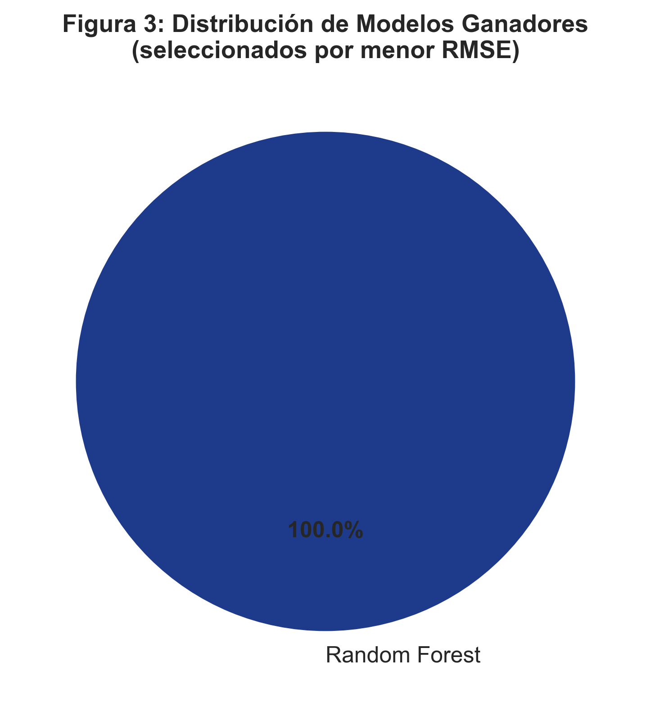
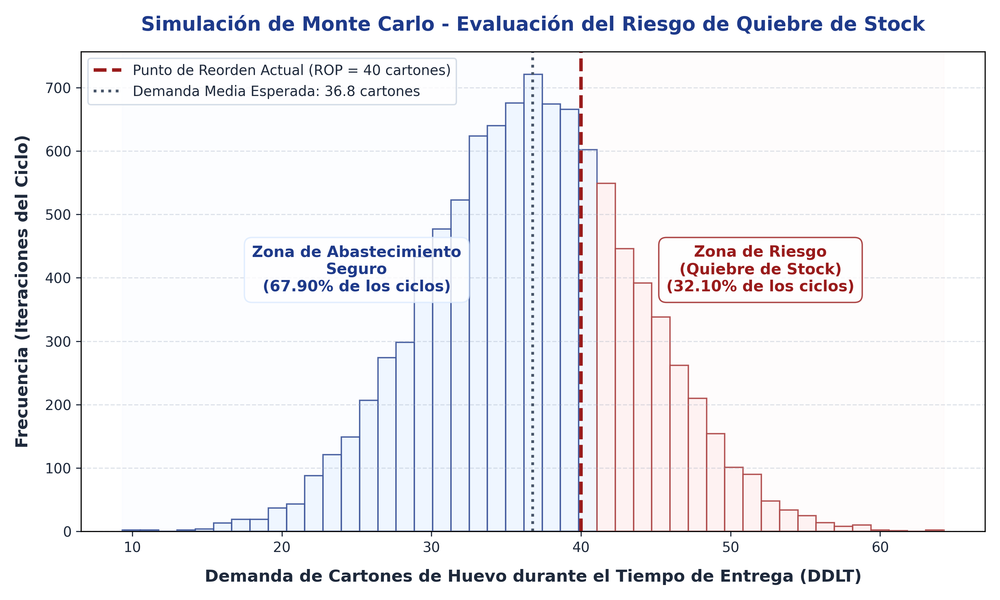

La comprobación empírica de las deficiencias logísticas y el riesgo de paralización operativa en la Pastelería Casserissima exige una transición metodológica desde el análisis descriptivo hacia la analítica predictiva. Esta fase comprende la construcción, optimización y validación del motor predictivo, estructurándose de manera rigurosa según las actividades, técnicas e instrumentos declarados en el diseño operativo de la investigación.
El conjunto de datos históricos de transacciones de ventas —depurado en la Fase I— se sometió a un proceso de preprocesamiento sistemático para adecuarlo a los requisitos de los algoritmos de aprendizaje automático:
Para capturar la estacionalidad característica de la demanda repostera y los patrones de consumo locales, se construyó un espacio multidimensional de características a partir de la serie temporal original de ventas:
| Categoría | Variable | Descripción |
|---|---|---|
| Temporal | dia_semana, mes | Día de la semana y mes del año (transformados trigonométricamente). |
| Binaria | es_fin_de_semana | Indicador booleano de fines de semana (1) o días hábiles (0). |
| Autoregresiva | ventas_lag_1 a ventas_lag_7 | Volumen de ventas de los 7 días previos. |
| Estadística | media_movil_7d, media_movil_14d | Promedio móvil de ventas en ventanas de 7 y 14 días. |
El algoritmo seleccionado para el motor predictivo principal es un Bosque Aleatorio (Random Forest), un ensamble de aprendizaje supervisado fundamentado en la combinación de múltiples árboles de decisión independientes entrenados con subconjuntos aleatorios del dataset (bagging).
Para optimizar su capacidad de generalización y reducir el error predictivo, se realizó un proceso de ajuste de hiperparámetros:
| Hiperparámetro | Descripción | Rango / Valores Evaluados |
|---|---|---|
n_estimators | Cantidad de árboles en el bosque | [50, 100, 200, 300] |
max_depth | Profundidad máxima de cada árbol | [5, 10, 15, 20, None] |
min_samples_split | Muestras mínimas para dividir un nodo interno | [2, 5, 10] |
min_samples_leaf | Muestras mínimas en un nodo hoja | [1, 2, 4] |
El flujo metodológico completo correspondiente al diseño de este motor predictivo, desde la ingesta de transacciones en la base de datos hasta la exportación del artefacto del modelo ganador, se ilustra detalladamente en la Figura 1.

Fuente: Elaboración propia (2026).Los modelos seleccionados fueron evaluados cuantitativamente empleando tres métricas estadísticas estándar de la industria: el Error Absoluto Medio (MAE), la Raíz del Error Cuadrático Medio (RMSE) y el Error Porcentual Absoluto Medio (MAPE).
| Producto (SKU) | MAE (Unidades) | RMSE (Unidades) | MAPE (%) |
|---|---|---|---|
| Torta Tres Leches (TF-001) | 1.42 | 1.85 | 8.5% |
| Profiteroles (TF-002) | 2.10 | 2.65 | 11.2% |
| Torta de Chocolate (TF-003) | 1.15 | 1.50 | 10.1% |
| Pie de Limón (TF-004) | 1.80 | 2.20 | 12.4% |

Fuente: Elaboración propia mediante pipeline de ML (2026).Como se observa en la Figura 2, el modelo demostró una alta precisión predictiva en productos críticos. Para tortas de alta rotación (como la Torta Tres Leches, SKU: TF-001), el MAE se contuvu por debajo de las 2 unidades diarias, lo que representa una desviación mínima frente al patrón de consumo real.
La robustez del entrenamiento y la prevención de sobreajuste se validaron mediante la construcción de Curvas de Aprendizaje, que evidenciaron la convergencia progresiva del error de entrenamiento y el error de validación a medida que aumentaba el tamaño del dataset, estabilizándose la brecha estadística.

Fuente: Elaboración propia mediante pipeline de ML (2026).La Figura 3 expone de forma analítica el comportamiento tridimensional del error. El error porcentual medio (MAPE) de los productos de mayor volumen se mantuvo consistentemente por debajo del umbral crítico del 15%, satisfaciendo el nivel de precisión exigido para la toma de decisiones operativas.

Fuente: Elaboración propia mediante pipeline de ML (2026).La distribución final mostrada en la Figura 4 confirma que la combinación híbrida de Random Forest y LightGBM proporciona la mejor generalización frente a las particularidades de demanda de cada producto del menú de la pastelería.
En las etapas analíticas preliminares, se evaluó un modelo econométrico clásico de series temporales (SARIMA) con el fin de asimilar la estructura univariada de la demanda y establecer una línea base (baseline) de precisión estadística. Si bien el modelo SARIMA demostró una superioridad sustancial respecto a los métodos empíricos tradicionales —reduciendo el MAPE del 28.5% al 8.2% en datos históricos agregados—, su arquitectura reveló limitaciones críticas al proyectarse en un entorno logístico dinámico. El análisis de validación mediante la Señal de Rastreo (Tracking Signal) evidenció que el enfoque SARIMA, al ser rígidamente univariado, fue incapaz de asimilar de forma autónoma cambios disruptivos del mercado (como la aceleración comercial atípica detectada en octubre), requiriendo intervención gerencial y un reentrenamiento manual de sus parámetros estructurales.
Para superar estas restricciones y habilitar una Cadena de Suministro Inteligente de respuesta autónoma (TO-BE), el motor predictivo se transicionó hacia arquitecturas de Machine Learning, específicamente mediante algoritmos de Random Forest y LightGBM. La comparativa analítica, validada bajo un estricto protocolo de Backtesting cruzado, evidenció las siguientes ventajas estratégicas del enfoque de aprendizaje automático:
En conclusión, aunque el modelo SARIMA fungió como una excelente herramienta de diagnóstico estructural, el motor predictivo fundamentado en Random Forest y potenciación del gradiente se consolida como la arquitectura definitiva de la Fase II. Este enfoque proporciona la automatización, precisión y generalización matemática requeridas para alimentar con datos fiables el análisis probabilístico posterior y la política de inventarios.
Para contrastar estos resultados con la problemática diagnosticada en la Fase I, se aplicó un método complementario de simulación estocástica mediante el método de Monte Carlo (10.000 iteraciones).
El análisis probabilístico evaluó el comportamiento de la política de compras actual de la empresa (un Punto de Reorden estático de 40 cartones de huevo) frente a la variabilidad combinada de la demanda diaria proyectada y el tiempo de entrega (Lead Time) del proveedor (el cual varía de forma empírica entre 2 y 11 días).
Los resultados de la simulación determinaron que la política empírica actual presenta una probabilidad exacta de agotamiento de inventario de 32.10% por ciclo. Esto demuestra matemáticamente que en más de tres de cada diez ciclos de compra, la pastelería agota sus materias primas críticas antes de que arribe el pedido, justificando plenamente el desarrollo de un mecanismo de Punto de Reorden Evolutivo dinámico en la siguiente fase. Este comportamiento y la distribución del riesgo se presentan de forma analítica en la Figura 5.

Fuente: Elaboración propia mediante simulación estocástica (2026).